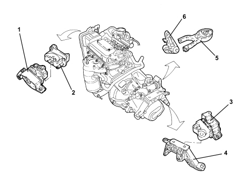

INTRODUCTION - POWER UNIT SUPPORTS
- Path
- Descriptions > 10 ENGINE > 1008 POWER UNIT SUPPORTS > INTRODUCTION - POWER UNIT SUPPORTS
- Kind
- system description
- Applies to
- engines: 1.4 8v; all production periods
- Interactive page
- https://sloeber94.github.io/elrnDB-fDbl/en/#/223000200
Applies to: engines: 1.4 8v; all production periods
CONSTRUCTION SPECIFICATIONS
The power unit supports have a structural connecting function for the power unit and the bodyshell.
They are designed to support the weight of the power unit and the loads from the torque transmitted by the engine.
Each support has a rubber-metal mounting which is designed to dampen the vibrations produced by the engine, thereby reducing most of the vibrations transmitted to the bodyshell.
This is a centre of gravity type power unit support, comprising two mountings plus a reaction rod with supports aligned on one axis for the centre of gravity thereby producing reaction forces.

1. Timing side flexible mounting
2. Timing side rigid support
3. Gearbox side flexible mounting
4. Gearbox side rigid support
5. Differential side reaction rod
6. Differential side rod mounting bracket